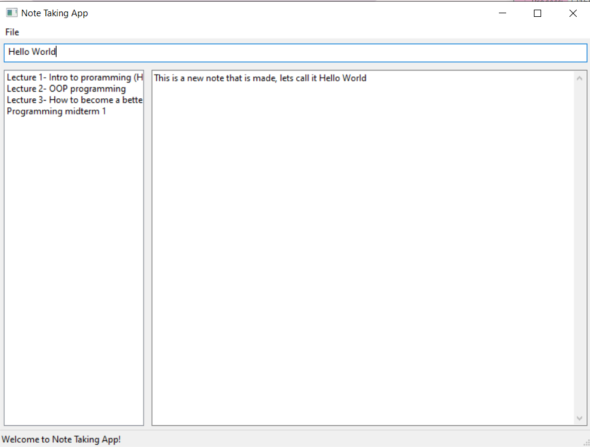
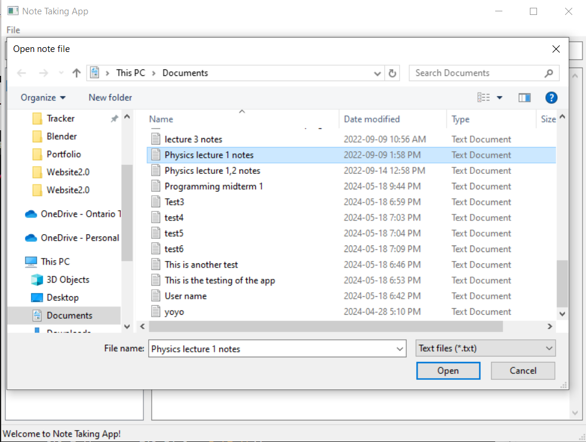

Overview
This is my first ever GUI project using C++, where I've created a simple note-taking app.
In this application, you can jot down your thoughts and save them effortlessly.
The app allows you to create as many notes as you like in one go, with each note being saved as a separate text file.
This functionality ensures that your information is well-organized and easily accessible anytime you need it.
Features
The main features of this application include the ability to take down notes and save them directly as text files.
All notes save any changes made, provided you click the 'Save' button.
Another key feature is the ability to open existing text files within the application and edit them, with the option to save any modifications.
Overall, it is a straightforward, user-friendly note-taking app designed to streamline your note-keeping process.
Design
For the design, I opted for a straightforward layout to establish a clear vision of what I want the application to eventually look like. The interface features a heading at the top, followed by a list of files in the left column, which serves as a navigation panel.
The main portion of the screen is dedicated to a larger typing area. At the bottom, you will find essential controls like 'Save', 'New', 'Close', and 'Open' buttons.
This layout is intuitive and flows smoothly, enhancing user experience by making it easy to manage and navigate notes.
Future Enhancements
For the future of the application, I aim to refine its aesthetics to achieve a sleeker look. While the current version effectively meets functional needs, enhancing the visual appeal is a priority to provide a more engaging user experience.
Additionally, I plan to address and resolve a few existing bugs, which should be straightforward fixes. These improvements will not only polish the application but also ensure smoother operation and user interaction.
Overview Interface
Main interface
Saving Functionality

Saving note file
Opening Previous Files
Opening a previous txt file
Example

How it looks when in usage